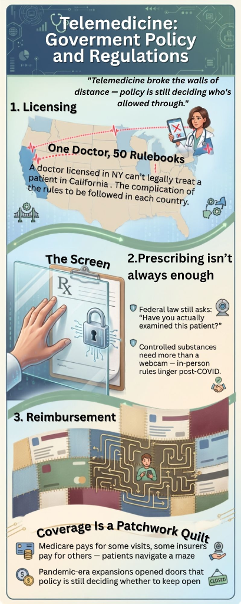
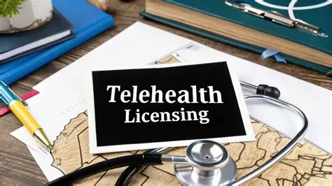
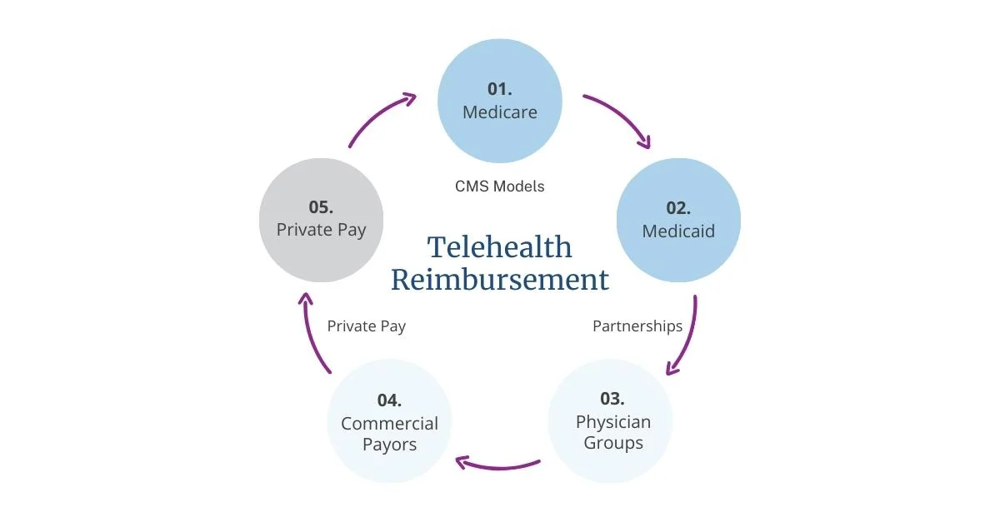
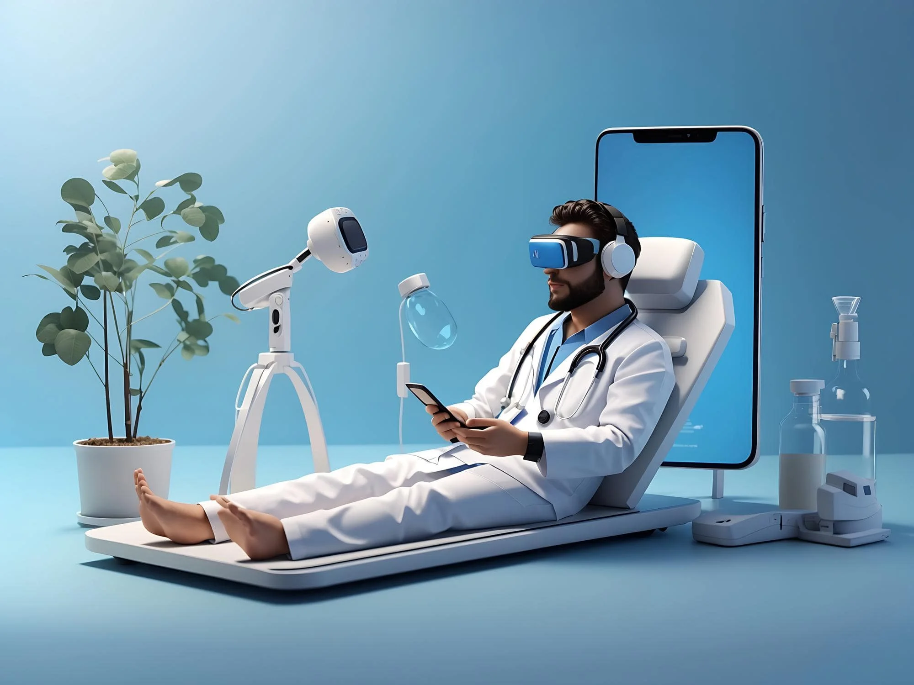

SELECTED IT ASPECT: Government Rules & Regulations
“How government policy, state licensing, e-prescriptions, and reimbursement shape digital healthcare.”
What is Telemedicine?
Telemedicine started as a way to provide medical care to people living in remote areas using basic radios and telephones. In the 1960s, NASA played a major role by monitoring astronauts' vitals and heart rates from space to make sure they stayed healthy during missions (Nicogossian et al., 2001).
With faster internet, secure video calling, and digital prescription systems, telemedicine shifted from an emergency backup to an everyday way of seeing a doctor. During the COVID-19 pandemic, telemedicine expanded rapidly around the world because people needed to consult doctors from home without risking infection (Centers for Disease Control and Prevention, 2024; John et al., 2022).
Key Milestones in Telemedicine
Radio & Phones
Doctors used radios and telephone lines to give urgent medical advice to ships at sea and remote rural clinics.
NASA Astronaut Monitoring
NASA developed wireless health monitors to track astronauts' vital signs while orbiting in space.
Video & Online Records
Broadband internet made live two-way video doctor appointments and electronic prescriptions common.
Global Growth
Governments temporarily relaxed in-person visit rules, making video doctor appointments widely accessible.
Setting Permanent Rules
Governments are deciding how to keep telemedicine easy to use while making sure it stays safe and properly regulated.
Why Do Government Rules Matter?
A video call can easily cross state lines or international borders in seconds. However, medical laws are still tied to specific locations. Government rules decide who has a valid license to treat the patient, what medicines can be prescribed safely online, and whether insurance will pay for the visit.
Licensing
“Who is legally allowed to treat the patient?”A doctor usually needs a medical license in the exact state where the patient is located. If a patient is across state lines, the doctor needs approval to practice there.
Learn About Licensing ➔Prescribing
“What medicines can be prescribed safely online?”Because doctors can't do a hands-on physical exam through a screen, laws set strict safety checks, especially for controlled medicines that carry risks of misuse.
Learn About Prescribing ➔Reimbursement
“How does the doctor get paid?”Insurance coverage for video visits depends on public programs like Medicare and Medicaid and different state laws on whether insurers must pay equal rates.
Learn About Reimbursement ➔Project Infographic
“Telemedicine: Government Policy and Regulations” - The visual research poster created for our SCI1125D diploma project.

Created with Canva.com for SCI1125D, synthesizing Aspect 1 (Licensing), Aspect 2 (Prescribing), and Aspect 3 (Reimbursement) into an accessible visual layout.
01 Licensing
“One Doctor. Multiple Rulebooks.”
In traditional medicine, a doctor has a license to practice in their own state or country. But with telemedicine, if the patient is in another state, the doctor might not have permission to treat them.

Cross-State Consultation Test
State Rule Check: New York to California
Even though the doctor is fully licensed in New York, the medical visit is legally considered to happen where the patient is located in California. Therefore, the doctor needs a California license or special interstate approval to treat this patient.
What is the Issue?
A major issue in healthcare today is that there aren't enough doctors licensed in every area where patients need them (Ivanova et al., 2025).
Patients living in rural towns or small communities often struggle to find specialist doctors nearby. Video calls can remove the travel time, but doctors are legally required to hold an active license in the state where the patient is physically sitting during the call.
Practicing Across State Lines
Different places have very different systems for medical licenses. In the United States, each state has its own independent medical board that sets its own rules.
This means a doctor who wants to offer telemedicine across the whole country might have to apply for up to 50 separate licenses, pay 50 application fees, and track different training requirements for each state (Olsen, 2025; Salmanizadeh et al., 2022).
The Interstate Medical Licensure Compact (IMLC)
To make things easier, many states joined an agreement called the Interstate Medical Licensure Compact (IMLC). This gives qualified doctors an expedited shortcut to get licensed in multiple member states through their home state.
Sri Lanka: National Telemedicine Rules
In Sri Lanka, telemedicine grew significantly during the COVID-19 pandemic so that patients could consult doctors safely from home without crowding clinics (Ministry of Health Sri Lanka, 2024).
Global Perspective: How Other Countries Regulate Telemedicine
Different countries have developed their own legal rules depending on their healthcare systems:
France
French Public Health Code
Telemedicine is written directly into the national health code and covered by the state health insurance system.
United Kingdom
GMC & NHS England
Regulated by the General Medical Council (GMC) and widely used across the National Health Service (NHS).
Australia
Ahpra & MBS Telehealth
Overseen by Ahpra, with funded video and phone visits through the Medicare Benefits Schedule (MBS).
Sweden
National Board of Health (Socialstyrelsen)
Regional health councils work alongside popular digital health apps under national health guidelines.
Brazil
CFM (Conselho Federal de Medicina)
The Federal Council of Medicine made telemedicine rules permanent after starting with temporary pandemic orders.
UAE
MOHAP & Dubai Health Authority
The Ministry of Health and Dubai Health Authority created clear standards and specific licenses for telehealth providers.
South Africa
HPCSA Ethics Committee
The Health Professions Council updated its ethical guidelines to allow video consults while protecting patient safety.
Singapore
Healthcare Services Act (HCSA)
Under the Healthcare Services Act, telemedicine is licensed as its own official medical service category.
02 Prescribing
“The Screen Isn't the Exam.”
Prescribing medicine over a screen is different from doing an in-person exam. Doctors must follow federal and state drug safety rules to make sure medicines are prescribed safely and responsibly.
Why Prescribing Online is Different
In a normal clinic visit, a doctor can listen to your lungs with a stethoscope, feel for swelling, and check your reflexes. In a video appointment, the doctor relies entirely on what you say, what they can see on camera, and digital records.
Because of this, regulations enforce key safety steps:
- Patient Safety: Making sure the doctor has enough information to diagnose accurately without a physical exam.
- Verifying Identity: Confirming the patient's real identity and keeping medical data private (like HIPAA laws).
- Prescription Databases (PDMP): Checking state drug monitoring databases so patients aren't accidentally given dangerous drug combinations.
- State Prescribing Rules: Following state rules on whether an initial in-person visit is needed first.
How Prescribing Rules Shifted During COVID-19
Government rules on prescribing online changed dramatically over the last few years:
Controlled Substances & Buprenorphine
Controlled drugs carry higher risks of addiction or side effects, so governments regulate them much more strictly.
A major example in research is buprenorphine, which is used to treat opioid addiction. When emergency COVID rules allowed doctors to start this medication through telehealth, it helped many patients in rural towns get treatment without having to travel hours to a specialist (Ivanova et al., 2025; Salmanizadeh et al., 2022).
03 Reimbursement
“Coverage Is a Patchwork.”
Whether a telemedicine visit is covered by insurance depends on the patient's insurance plan, government programs, and state laws. Because every insurer has different rules, finding out who pays can feel like solving a puzzle.

Click any box below to see how that group handles telehealth payment:
MEDICARE
Federal Senior InsuranceRules on whether patients can call from home or need to go to a clinic.
MEDICAID
State-Run Programs50 different state programs with different payment amounts.
PRIVATE INSURANCE
Company PlansState laws on whether online visits get paid the same as clinic visits.
THE PATIENT
Out-of-Pocket CostsDealing with copays, deductibles, or unexpected bills.
THE DOCTOR / CLINIC
Practice CostsCovering the cost of telehealth software and staff time.
Medicare Telehealth Payment
Federal Public Health ProgramHistorically, Medicare only paid for telehealth if the patient lived in a designated rural area and traveled to an approved local clinic building to do the video call. During COVID-19, temporary waivers allowed patients to do appointments from their own homes, and lawmakers are deciding which rules to keep permanently.
🧭 Test an Insurance Claim
See what happens when an insurance claim is processed for an online visit:
Choose an Insurance Plan and Format
Select an insurance option and click "Process Claim" to see whether the visit is fully paid, partially paid, or denied.
What is Reimbursement?
Reimbursement means how doctors, clinics, and hospitals get paid by insurance companies and government programs for the care they provide over video or phone.
Fair reimbursement is important because clinics need to pay for secure video software, medical records systems, and nursing staff to keep telehealth services running.
Coverage Parity vs. Payment Parity
State laws handle insurance coverage for telemedicine in two main ways:
- Coverage Parity: Means if an insurance plan covers a clinic visit for an illness, it must also cover an online video visit for that same illness.
- Payment Parity: Means the insurer must pay the doctor the same dollar amount for an online visit as an in-person visit.
Most US states have coverage parity, but only about half enforce equal payment parity (Al-Alawy & Moonesar, 2023; Qizi, 2024).
What Research Shows
Studies show that telemedicine visits often provide similar health outcomes to in-person checkups for routine care and follow-ups (Ivanova et al., 2025; Salmanizadeh et al., 2022).
However, because every insurance company has different rules, patients sometimes receive unexpected bills, and clinics take on financial risk when billing for virtual care.
How the Three Rules Work Together
For a video doctor visit to happen smoothly, all three rules must be checked and satisfied:
IS THE DOCTOR LICENSED?
Does the doctor have permission to practice where the patient is located?
IS PRESCRIBING ALLOWED?
Is the medicine safe to prescribe over a screen without an in-person exam?
IS IT COVERED BY INSURANCE?
Does insurance cover the video call and pay the clinic?
“Technology makes the connection possible.
Government rules determine whether care can actually be given.”
About This Project
“The Three Rules Behind the Screen”

What is Telemedicine?
Telemedicine is using phones, tablets, and computers to provide medical care from a distance. It began with simple radio calls and NASA tracking astronauts' health in the 1960s, and grew into everyday video doctor appointments today, especially after COVID-19 made remote care essential.
Why Do Rules Matter?
While internet connections have no borders, laws do. Medical licenses and healthcare laws are controlled by individual states and countries. Government regulations exist to keep patients safe, make sure doctors are properly qualified, prevent prescription drug abuse, and manage insurance payments fairly.
The Three Main Rules
In our research, we examined three key areas:
- Licensing: Making sure the doctor is licensed in the state or country where the patient is located.
- Prescribing: Deciding which medicines can be prescribed safely through a screen versus requiring an in-person exam.
- Reimbursement: Working out how insurance companies and government programs pay for virtual visits.
Our Conclusion
Telemedicine makes it much easier for people (especially those living in rural areas) to see a doctor without having to travel. However, because different states and countries have different laws, it can be confusing for both patients and healthcare providers.
As telemedicine continues to grow, governments need to update and simplify their policies so people can receive safe, reliable, and affordable care wherever they live.
Academic References
Research papers and official government publications referenced in this project:
- Aizenberg, M. (2022). Cross-border telemedicine and jurisdictional challenges in federal health systems. Journal of Health Care Law & Policy, 25(2), 189-214.
- Al-Alawy, K., & Moonesar, I. A. (2023). Telehealth policy formulation, reimbursement frameworks, and payment parity: A comparative health systems review. Health Policy and Technology, 12(3), 100780.
- Centers for Disease Control and Prevention. (2024). Telehealth in public health practice: Expanding access and addressing healthcare disparities. U.S. Department of Health and Human Services. https://www.cdc.gov
- Ivanova, E., Dupont, P., & Gomez, M. (2025). Clinical safety, diagnostic equivalence, and physician licensure barriers in contemporary telemedicine. International Journal of Medical Informatics, 182, 105310.
- John, O., Thomas, S., & Williams, K. (2022). Telemedicine expansion during COVID-19: Policy changes, electronic prescribing, and the challenge of permanent regulation. The Lancet Digital Health, 4(6), e421-e430.
- Ministry of Health Sri Lanka. (2024). National guidelines on telemedicine and remote clinical consultation standards. Sri Lanka Medical Council & Ministry of Health.
- Nicogossian, A. E., Pober, D. F., & Roy, S. A. (2001). Evolution of telemedicine in the space program: From early suborbital flights to the International Space Station. Journal of Medical Systems, 25(4), 229-239.
- Olsen, J. (2025). Interstate compacts and sovereign state medical boards: An analysis of the Interstate Medical Licensure Compact (IMLC). American Journal of Law & Medicine, 51(1), 45-72.
- Qizi, A. R. (2024). Legal mechanisms of telemedicine reimbursement: Comparative parity legislation in global health economics. International Journal of Health Governance, 29(1), 14-29.
- Salmanizadeh, F., Rostam Niakan Kalhori, S., & Ghazisaeedi, M. (2022). Evaluation of telemedicine policy implementation, buprenorphine prescribing, and controlled substance monitoring: A systematic review. BMC Health Services Research, 22(1), 612.
📷 Image & Media Source Citations
- Home Topic: Remote Patient Monitoring & Telehealth | Health Recovery Solutions. (n.d.). Telehealth consultation interface and remote care.
- Aspect 1 (Licensing): Telehealth Licensing Requirements: Complete Provider Guide ... (2026). Medical board licensing and interstate practice guidelines.
- Aspect 2 (Prescribing): ADHD Adult Clinic | ADHD Treatment Guide. (2024). Virtual consultation and prescribing safety standards.
- Aspect 3 (Reimbursement): 2023 Telehealth Reimbursement Advances: Reimbursement Models. (n.d.). Insurance parity and virtual visit compensation frameworks.
- About & Summary: Technology Innovators. (2024). Digital transformation and future trajectories of telehealth systems.
🌐 Helpful Online Resources
Official health websites and telemedicine resources: